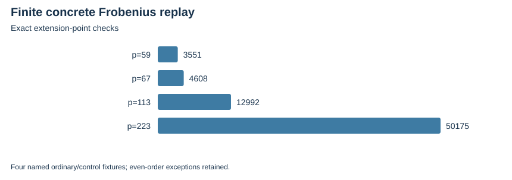

TWIST ROUTES 1–3 · E29 · 2026-10-23 · LOCAL BOUNDED EVIDENCE
The finite replay checks 71326 actual power-Frobenius point cases and 71178 twist-embedding addition pairs across the ordinary and control fixtures. It checks odd-component projectors, composite-order inversion and explicit even two-torsion exceptions.
The new Lean project constructs F59 and its quadratic extension, proves the concrete field Frobenius identities and additivity on the actual Weierstrass point group, and proves conditional odd-order cancellation. Its durable replay audits 17 exported theorems: zero failures and zero trusted/native_decide declarations.
| Fixture | Extension point/Frobenius checks | Twist addition pairs | Odd projector checks |
|---|---|---|---|
| p=59 | 3551 | 2809 | 3551 |
| p=67 | 4608 | 5184 | 0 |
| p=113 | 12992 | 13456 | 0 |
| p=223 | 50175 | 49729 | 50175 |

The exact twist point-group embedding, concrete odd-subgroup/projector identification, integer-to-prime-field row module and Rust serialization bridges remain open. The full E29 theorem is not claimed complete.
Verified locally on the same host; complete raw publication is pending artifact-store access. No calibrated speedup, novelty, independent-host replay or NIST DLP is claimed. Original acceptance criteria remain open.
Rust 1.90.0, PARI/GP 2.17.2, one worker except the three-cell E25 orchestration; isolation L0. Caps and limits are in each source-frozen protocol and receipt. Counts are exact finite records; no wall time is admitted. Stochastic uncertainty is not inferred from repeated configurations or targets.
| Receipt / phase | UTC start | Exit | Source pin |
|---|---|---|---|
| projection-20261023-v1-adjudication.json | 2026-10-23T02:26:25Z | 0 | b7230ada8ac7 |
| projection-20261023-v1-gp.json | 2026-10-23T02:25:27Z | 0 | b7230ada8ac7 |
| projection-20261023-v1.json | 2026-10-23T02:25:02Z | 0 | b7230ada8ac7 |
Native assessment: ../../execution-v2/assessment-20261023-v3/ASSESSMENT.json. Raw members: runs/projection-20261023-v1; lean-v2/receipts/resume-20261023-v1. Source/input/binary hashes and exact argv: E29-receipts.json and ../../execution-v2/receipts/.